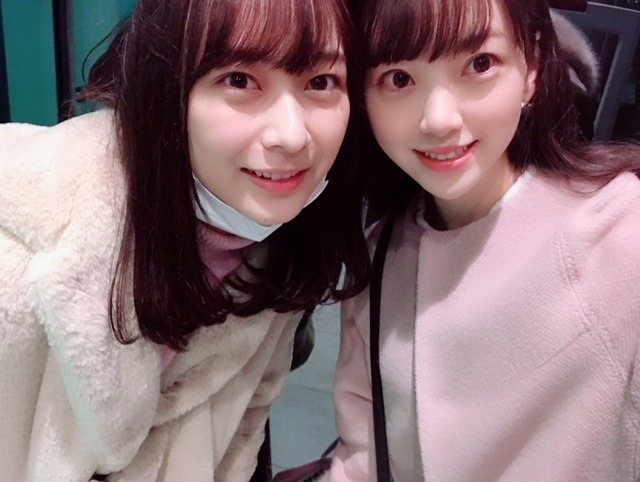

2019/0109Wedルージュと言うか紅と言うか
ちいさな目標
今年はコーヒーを飲めるようになりたいなぁ
コーヒー牛乳は好きだし
特に温泉上がりの！
コーヒーの香りも好きだから
あと一歩な感じがします...
朝に嗅ぐコーヒーの香りが大好きで
パンの香りもしたらもう最高☺︎
パン屋さんに行くと、ここで働いている人は毎日パンの香りに包まれて幸せな気持ちなのかなぁって考えます
その人がなぜその職についたのかっていう話を聞くのすごく好きなんですよね
だから会う人会う人に聞いちゃう
意外な理由もあればなるほど〜そんなきっかけ！と納得したり...
私がアイドルを目指すきっかけは何だったのか
実際乃木坂に入ってどう変わったか...
ちょうどですね、
1/11 金曜 18:30〜NHK岐阜にて
「まるっと！ぎふ」インタビューの様子が流れます☺︎！
そこで岐阜での話や映画の話、乃木坂の話などをさせていただきましたので興味のある方は是非、見てください！
お正月は、絢音と焼肉を食べてお買い物をしたり
蘭世と韓国料理を食べてお買い物してプリクラを撮ったり(若い)
友達と和食や火鍋を食べたりゆかとディズニー行って映画を観たり母とお買い物をしたり凄く充実していました

お仕事の合間やオフの日に
会いたいって言ってくれる
会いたいって思える素敵な友達に恵まれて幸せ者だなぁと新年早々感じました✨
大阪の握手会でも沢山の方が
寒い中会いに来てくださりました
ありがとうございます✨✨
関わる人、1人1人を大切にできる一年にしたいです！

カメラ向けると大抵真顔をするみり愛さん...
毎晩冷え込むので皆さん体調にはお気をつけて〜〜


今日23:45〜文化放送 レコメン！
今週の日曜は21時22時台に
らじらー！サンデーに出ます
聴いてくださいな、
寒い日はラジオに限る！
笑
あ！ちなみに今日の夜ご飯は、

お寿司なんだ〜〜♪♪
楽しみ！梅しそ巻きが好き！
わーい
では
2019/01/09 18:36
コメント(361)
コーヒーほんとに分かる!コーヒー牛乳大好きで、コーヒーの香り、特に豆からひいたときの匂いなんて凄くいいよね!コーヒ飲めるようになりたいけど、たまに買って飲むと、あぁぁ〜ってなるの。
ブログ更新ありがとう。
そして絢音ちゃんのとの2Sほんとに有難うございます。
職業について、殆どは縁だと思うけど、そこに至るものは人それぞれだからね。
そういうのに思いを馳せると想像力が広がって面白いね。
そういえば絢音ちゃんの舞台
明日から始まりますが、未央奈は観に行くのかな？
そして絢音ちゃんのとの2Sほんとに有難うございます。
職業について、殆どは縁だと思うけど、そこに至るものは人それぞれだからね。
そういうのに思いを馳せると想像力が広がって面白いね。
そういえば絢音ちゃんの舞台
明日から始まりますが、未央奈は観に行くのかな？
新年一発目の個握お疲れ様です！4部1枚しかなかったけど安定に楽しかった〜！握手直前までカイロしててんけど天性の冷え性には敵わなかった爆笑
そういえばいつまでエクステなんか聞きそびれた（笑）やっぱ長いの好き！！
次は3月の大阪全握！！その前にバスラ(当たったら)
今年はまたちょくちょく遠征とかしたいなぁとか。
そういえばいつまでエクステなんか聞きそびれた（笑）やっぱ長いの好き！！
次は3月の大阪全握！！その前にバスラ(当たったら)
今年はまたちょくちょく遠征とかしたいなぁとか。
ラジオ、頑張って下さい!!
ブログ更新ありがとうございます。
堀さん髪伸びましたねでも最初の頃に戻ったみたいでとても可愛いです。
写真集を見た時にとても可愛いかったです。
今年も宜しくお願いします ⤵
いつものだじゃれを言って終わりたいと思います。
堀さんが堀詰駅に到着。
堀詰駅とは高知県高知市にある土佐電気鉄道(伊予線)の駅名。
堀さん髪伸びましたねでも最初の頃に戻ったみたいでとても可愛いです。
写真集を見た時にとても可愛いかったです。
今年も宜しくお願いします ⤵
いつものだじゃれを言って終わりたいと思います。
堀さんが堀詰駅に到着。
堀詰駅とは高知県高知市にある土佐電気鉄道(伊予線)の駅名。
お疲れ様〜
そして明けましておめでとうございます。
今年も変わりなくよろしくお願いしますm(_ _)m
私も数少ないお休みはワンちゃんの散歩とか美容室に連れて行ったり、映画観ながらぐたーってしたりしよったよ。笑
同じく関わる人、気にかけてくれる人は大切にしていきたいなぁと思う！
私の今年の目標は高校のときの友達に会うために九州に帰ることかな(･ω･)
8年間も関係が続いてるのもやはり縁だし、大切にしていきたいよね(○･∀･)ﾉ
話は変わるけどちなみにお正月は映画4本観た！
「三国志英傑伝 関羽」「沈黙、愛」「ビューティーインサイド」「一分間だけ」
正直全部オススメやし、未央奈に観てほしい！！
三国志英傑伝 関羽はがっつり歴史物。
私が好きな女優さんが出演してるから興味本位で観ただけなんやけどアクションがとてつもなく凄い。
アクション女優目指すなら試しに観てほしいかな←
沈黙、愛 は韓国映画なんやけど、色々と考えさせられる内容。
これも私が好きな女優が出演しとるから観ただけやけど未央奈にも是非観てほしい内容。
父親が娘を愛するが故に頑張る姿が本当泣ける。
映像とかシリアスな雰囲気なんやけど、怖い感じとかではない！
ビューティーインサイドも韓国映画。
ちょっと笑えるし、ちょっと泣けるし。
ストーリーも主人公の容姿が毎朝目覚める度に変わるっていう若干ファンタジーが入った内容やったり。
知ってる俳優・女優さんも沢山出とるけん観よって面白い！
ちなみに日本からは上野樹里さんも出演しとる(*´◒`*)
一分間だけは台湾映画。
原作自体は原田ハマさんっていう日本の作品なんやけどそれを台湾でリメイクした作品。
ワンちゃんが家族におる未央奈に絶対観てほしい！
私も家族にワンちゃんがおるけんこの映画で色々考えさせられたよ。
良かったら是非観てみて(*´◒`*)
じゃあ忙しいやろうけどゆっくり休むんよ〜
おやすみおな(ヽ´ω`)
そして明けましておめでとうございます。
今年も変わりなくよろしくお願いしますm(_ _)m
私も数少ないお休みはワンちゃんの散歩とか美容室に連れて行ったり、映画観ながらぐたーってしたりしよったよ。笑
同じく関わる人、気にかけてくれる人は大切にしていきたいなぁと思う！
私の今年の目標は高校のときの友達に会うために九州に帰ることかな(･ω･)
8年間も関係が続いてるのもやはり縁だし、大切にしていきたいよね(○･∀･)ﾉ
話は変わるけどちなみにお正月は映画4本観た！
「三国志英傑伝 関羽」「沈黙、愛」「ビューティーインサイド」「一分間だけ」
正直全部オススメやし、未央奈に観てほしい！！
三国志英傑伝 関羽はがっつり歴史物。
私が好きな女優さんが出演してるから興味本位で観ただけなんやけどアクションがとてつもなく凄い。
アクション女優目指すなら試しに観てほしいかな←
沈黙、愛 は韓国映画なんやけど、色々と考えさせられる内容。
これも私が好きな女優が出演しとるから観ただけやけど未央奈にも是非観てほしい内容。
父親が娘を愛するが故に頑張る姿が本当泣ける。
映像とかシリアスな雰囲気なんやけど、怖い感じとかではない！
ビューティーインサイドも韓国映画。
ちょっと笑えるし、ちょっと泣けるし。
ストーリーも主人公の容姿が毎朝目覚める度に変わるっていう若干ファンタジーが入った内容やったり。
知ってる俳優・女優さんも沢山出とるけん観よって面白い！
ちなみに日本からは上野樹里さんも出演しとる(*´◒`*)
一分間だけは台湾映画。
原作自体は原田ハマさんっていう日本の作品なんやけどそれを台湾でリメイクした作品。
ワンちゃんが家族におる未央奈に絶対観てほしい！
私も家族にワンちゃんがおるけんこの映画で色々考えさせられたよ。
良かったら是非観てみて(*´◒`*)
じゃあ忙しいやろうけどゆっくり休むんよ〜
おやすみおな(ヽ´ω`)
コーヒー苦手なの？
朝のコーヒーはいいよ( -`ω-)b
俺は今日生姜焼き昼夜食べた！(笑)
朝のコーヒーはいいよ( -`ω-)b
俺は今日生姜焼き昼夜食べた！(笑)
未央奈ちゃんブログ更新ありがとうございます！
1月6日のインテックス大阪での個握の4部が始まろうとしてる時出てくる時スキップしながら爆笑してたでしょ？笑
やっぱ未央奈ちゃんはよく笑う人だなって改めて感じましたっ！笑
2代目箸くんのネタ、見れるのを楽しみにしてるよ！笑
ツインテールめっちゃ似合ってるね！
色んな髪型やっても似合うと思うよ！！！
次のブログも楽しみにしてるよ！
お仕事頑張ってね！
1月6日のインテックス大阪での個握の4部が始まろうとしてる時出てくる時スキップしながら爆笑してたでしょ？笑
やっぱ未央奈ちゃんはよく笑う人だなって改めて感じましたっ！笑
2代目箸くんのネタ、見れるのを楽しみにしてるよ！笑
ツインテールめっちゃ似合ってるね！
色んな髪型やっても似合うと思うよ！！！
次のブログも楽しみにしてるよ！
お仕事頑張ってね！
美味しい豆沢山あるから早くコーヒー飲めるようになってね(^o^)
みおなちゃんとあやねちゃんのコンビ大好き♡
未央奈、こんばんは〜！
ルージュと紅。なんかジブリ感あるね。笑
お、目標！どどん。
コーヒー飲めるようになるかぁ。言われてみればたしかに飲んでるイメージない！
あーわかる。温泉上がりのコーヒー牛乳は最高よね！
コーヒーとパンの香りは最高のハーモニーだよ〜〜♪
(急にハーモニーとか使い始める。笑
実はこっちもコーヒーをそこまで飲む人ではなくて、18時以降に飲むと夜全然眠れなくなっちゃうっていうね。笑
パン屋さんは憧れの職業の１つよね。
こっちも人が選択した理由を聞くの超好き。笑
就活してたときにいろんな社会人の方の職業を選んだ理由を聞いて納得したり、直感重視の方もいたりで楽しかったよ。
お！未央奈がアイドルを目指すきっかけか！
知りたい！！ん？なになに？ちょうど？金曜18:30から？まるっと！ぎふ？
って、番宣かーーい！笑
紹介する文章の流れうまいね。まいりました。
ぎふ。
見たい！！！(^-^)
あ、今年中にたぶん岐阜行くと思うからおすすめコースを教えていただきたいです〜✨
焼肉〜
プリクラ。まだまだ若いぞー！笑
家族も大切にしてるところさすが！
絢音ちゃんとのツーショット通りま〜す♪
よかったね。未央奈がにこにこしてるのを見るだけでこっちは幸せだよ〜！✌️
大阪の握手会！握手レポを見るたびにニヤニヤしてた。笑
1人1人とちゃんと向き合って話してくれてるのがすごく伝わってきたよ。(レポから察するに)
みり愛。笑
2人とも花柄。
この前755で送ってくれた動画を何度もみてるよ！すごくいい。。
ありがとう。未央奈も暖かい格好してね〜〜
モコモコ。
彼女とデートなう♪って感じだね。笑
かわいい写真をありがとっ！
レコメン！聴くよぉーー！！
らじらー！サンデーも聴くね。
ほんと。笑 寒い日はやっぱラジオだよねー。笑笑
お寿司いいなぁ〜
うらやましい。。
おー梅しそ巻きかー！こっちはあじが1番好き。
味↗︎じゃなくて鯵↘︎ね。笑
ってことは今日のレコメン！には、おこ未央奈は現れないんですかねぇ。にやにや
楽しみ楽しみ。
わーい
かわいい。。(^-^)
では！ラジオで！
ルージュと紅。なんかジブリ感あるね。笑
お、目標！どどん。
コーヒー飲めるようになるかぁ。言われてみればたしかに飲んでるイメージない！
あーわかる。温泉上がりのコーヒー牛乳は最高よね！
コーヒーとパンの香りは最高のハーモニーだよ〜〜♪
(急にハーモニーとか使い始める。笑
実はこっちもコーヒーをそこまで飲む人ではなくて、18時以降に飲むと夜全然眠れなくなっちゃうっていうね。笑
パン屋さんは憧れの職業の１つよね。
こっちも人が選択した理由を聞くの超好き。笑
就活してたときにいろんな社会人の方の職業を選んだ理由を聞いて納得したり、直感重視の方もいたりで楽しかったよ。
お！未央奈がアイドルを目指すきっかけか！
知りたい！！ん？なになに？ちょうど？金曜18:30から？まるっと！ぎふ？
って、番宣かーーい！笑
紹介する文章の流れうまいね。まいりました。
ぎふ。
見たい！！！(^-^)
あ、今年中にたぶん岐阜行くと思うからおすすめコースを教えていただきたいです〜✨
焼肉〜
プリクラ。まだまだ若いぞー！笑
家族も大切にしてるところさすが！
絢音ちゃんとのツーショット通りま〜す♪
よかったね。未央奈がにこにこしてるのを見るだけでこっちは幸せだよ〜！✌️
大阪の握手会！握手レポを見るたびにニヤニヤしてた。笑
1人1人とちゃんと向き合って話してくれてるのがすごく伝わってきたよ。(レポから察するに)
みり愛。笑
2人とも花柄。
この前755で送ってくれた動画を何度もみてるよ！すごくいい。。
ありがとう。未央奈も暖かい格好してね〜〜
モコモコ。
彼女とデートなう♪って感じだね。笑
かわいい写真をありがとっ！
レコメン！聴くよぉーー！！
らじらー！サンデーも聴くね。
ほんと。笑 寒い日はやっぱラジオだよねー。笑笑
お寿司いいなぁ〜
うらやましい。。
おー梅しそ巻きかー！こっちはあじが1番好き。
味↗︎じゃなくて鯵↘︎ね。笑
ってことは今日のレコメン！には、おこ未央奈は現れないんですかねぇ。にやにや
楽しみ楽しみ。
わーい
かわいい。。(^-^)
では！ラジオで！
未央奈、ブログ更新ありがとう！
自分はコーヒーめっちゃ好きなのですが、自分は未央奈とは逆で、
コーヒー牛乳が飲めない~~~ !
変わってますよね(自覚)
2019年に入り、いよいよ寒さが本格的になってきました。
未央奈も乃木坂の皆も体調を崩さないように気をつけて生活してくださいね。
ずっと応援しています!
1つだけ知りたい事があるのですが、未央奈という名前の由来は何ですか？
もし良かったらですが、次のブログで教えてもらえたら嬉しいです♪
自分はコーヒーめっちゃ好きなのですが、自分は未央奈とは逆で、
コーヒー牛乳が飲めない~~~ !
変わってますよね(自覚)
2019年に入り、いよいよ寒さが本格的になってきました。
未央奈も乃木坂の皆も体調を崩さないように気をつけて生活してくださいね。
ずっと応援しています!
1つだけ知りたい事があるのですが、未央奈という名前の由来は何ですか？
もし良かったらですが、次のブログで教えてもらえたら嬉しいです♪
未央奈ブログ更新ありがとー！
ロングもやっぱり似合ってて可愛い！
やっぱりコーヒー飲めないよねー
自分もコーヒー苦くて飲めないんですー
まだ寒い日続くけど頑張って！
ロングもやっぱり似合ってて可愛い！
やっぱりコーヒー飲めないよねー
自分もコーヒー苦くて飲めないんですー
まだ寒い日続くけど頑張って！
みおな、こんばんは(^_^)
今、レコメンを聴きながらコメント書いてるよ～(^o^)／
今年初の生放送だよね(^_^)
みおなの生の声を聴けるのは、やっぱり嬉しいな＼(^o^)／
頑張ってね！
それじゃ、またね(^o^)／
今、レコメンを聴きながらコメント書いてるよ～(^o^)／
今年初の生放送だよね(^_^)
みおなの生の声を聴けるのは、やっぱり嬉しいな＼(^o^)／
頑張ってね！
それじゃ、またね(^o^)／
自分は一年ほど前までコーヒーの匂いでさえ苦手でした笑
だけど、目上の方にコーヒーを出されたり、どうしても断れない場面でコーヒーを飲まなければならない場面が連続で発生したんです！
無理して飲むしか無いので飲んでいたら、気づいたら平気で飲めるようになってました笑
コーヒーは絶対に飲めないって思い込んでいたけど、無理やり飲んでみると意外と好きになっちゃいます笑
今では自分から率先して飲んでます(^-^)
ってなんの話やねーんって感じですよね
焦らなくても何気ない日常の中でいつしか飲めるようになってますよ！
だけど、目上の方にコーヒーを出されたり、どうしても断れない場面でコーヒーを飲まなければならない場面が連続で発生したんです！
無理して飲むしか無いので飲んでいたら、気づいたら平気で飲めるようになってました笑
コーヒーは絶対に飲めないって思い込んでいたけど、無理やり飲んでみると意外と好きになっちゃいます笑
今では自分から率先して飲んでます(^-^)
ってなんの話やねーんって感じですよね
焦らなくても何気ない日常の中でいつしか飲めるようになってますよ！
更新お疲れ様！ラジオ頑張って
ブログ更新ありがと！
笑顔でいてください！
だいすきです！
だいすきです！
明けましておめでとうございます！
レコメン毎回楽しく拝聴しております！
今年は女優としての堀ちゃんが大活躍ですね！
応援しています！
堀ちゃんが幸せな一年でありますように！！
レコメン毎回楽しく拝聴しております！
今年は女優としての堀ちゃんが大活躍ですね！
応援しています！
堀ちゃんが幸せな一年でありますように！！
ブログ更新ありがとう！
お寿司かぁいいなぁ

今日僕は焼肉食べに行きましたよ！
美味しかったです
2月の個握まであと少しなんで学業頑張ります！
待っててくださいね〜
したっけ〜〜
どさんこしゅーちゃん
お寿司かぁいいなぁ
今日僕は焼肉食べに行きましたよ！
美味しかったです
2月の個握まであと少しなんで学業頑張ります！
待っててくださいね〜
したっけ〜〜
どさんこしゅーちゃん
個握お疲れ様でした～(^-^ゞ
充実したお正月休みやね(^∇^)
充実したお正月休みやね(^∇^)
明けましておめでとう！
今年もよろしく‼️ 頑張ってね
かわいい写真ありがとう
寒いから体調に気をつけて下さいm(__)m
今年もよろしく‼️ 頑張ってね
かわいい写真ありがとう
寒いから体調に気をつけて下さいm(__)m
わあ♡可愛いお写真いっぱい！！
お友達大切にね〜（＾ω＾）
わたし未央奈の影響で韓国ハマりすぎてる…
アイドルもハマってしまったぁ。
IZ*ONEのチェウォンちゃん可愛い〜！！
やっぱりキレキレダンス&歌上手いアイドルちゃんは
素敵！！未央奈のしなやかなダンスも好きだよ♡♡
未央奈はIZ*ONEだと誰好きなのかな〜？？
この間のコラボは隣ユリちゃんだったよね〜^ ^
ここ最近TWICEのOOH-AHHリピしまくってる〜
可愛い曲！！未央奈は今年もTWICE追っかけするの？？
体調に気をつけてね〜！
インフルエンザにも〜※
ばいぃ
ほりっぴ～、ナンチです♪
ブログ更新ありがとう～
今日はめっちゃ寒かった
インフルも流行り始めたので気をつけんとね
今週末会えなかったら泣いちゃうよ
今晩はジンギスカンでした
ほりっぴ～は食べたことある
ブログ更新ありがとう～
今日はめっちゃ寒かった
インフルも流行り始めたので気をつけんとね
今週末会えなかったら泣いちゃうよ
今晩はジンギスカンでした
ほりっぴ～は食べたことある
未央奈！(*´꒳`*)
コーヒー。気持ちはわかります！！
コーヒーのドリップ方法もいくつかあるけど、私はサイフォン式のドリップは1番渋くてかっこいいなぁ〜って思います。(*´ω｀*)
ただし！サイフォン式は1番渋みが出ると聞いたことがあります笑 格好良さを取るか、味を取るか。。笑
コーヒー☕️応援するのも違う気がしますが飲めるように頑張ってね！(*´꒳`*)
姉がコーヒー結構ちゃんとやってて、家に行くと豆挽いてくれてすっごい香りなんだよねー。でも私はパンの香りが1番好きです♬(*´꒳`*)今でもたまにパン屋さんになろうかなって思うことがあります〜笑
私お仕事いくつか経験して今のお仕事に就きましたが、最初は警察やってました。
当時警察になった理由は主に4つ。警察だった家族の影響、当時現実主義者で公務員の安定収入に惹かれた、当時片思いの女の子が公務員と結婚したいと言っていた、身体能力が高く、且つ正義感がめちゃ高かった。です。笑
まるっと！ぎふ 超見たい。。。興味はあるけど時間とローカル番組は見る方法が無いなぁ。。凄く見たい。。(＞人＜;)
お正月、凄く充実していたようで良かったね！！乃木坂メンバーにしれっと名前が混ざるおぎゆかさん笑 仲良しで何よりです♬(*´꒳`*)
一旦コメント区切るね！続きはまた後で！！
コーヒー。気持ちはわかります！！
コーヒーのドリップ方法もいくつかあるけど、私はサイフォン式のドリップは1番渋くてかっこいいなぁ〜って思います。(*´ω｀*)
ただし！サイフォン式は1番渋みが出ると聞いたことがあります笑 格好良さを取るか、味を取るか。。笑
コーヒー☕️応援するのも違う気がしますが飲めるように頑張ってね！(*´꒳`*)
姉がコーヒー結構ちゃんとやってて、家に行くと豆挽いてくれてすっごい香りなんだよねー。でも私はパンの香りが1番好きです♬(*´꒳`*)今でもたまにパン屋さんになろうかなって思うことがあります〜笑
私お仕事いくつか経験して今のお仕事に就きましたが、最初は警察やってました。
当時警察になった理由は主に4つ。警察だった家族の影響、当時現実主義者で公務員の安定収入に惹かれた、当時片思いの女の子が公務員と結婚したいと言っていた、身体能力が高く、且つ正義感がめちゃ高かった。です。笑
まるっと！ぎふ 超見たい。。。興味はあるけど時間とローカル番組は見る方法が無いなぁ。。凄く見たい。。(＞人＜;)
お正月、凄く充実していたようで良かったね！！乃木坂メンバーにしれっと名前が混ざるおぎゆかさん笑 仲良しで何よりです♬(*´꒳`*)
一旦コメント区切るね！続きはまた後で！！
コーヒー牛乳，温泉あがりはほんとにいいですよね。
何か，においでいろんなことを思い出しますよね。
この匂いはあのときの匂いだ。あの子を思い出すな，あの道が懐かしいな，あの頃の自分はどうだったかなって。
パンの香りは，人の温かさを感じますよね。
さすがにＮＨＫ岐阜は見られない……。
でも，岐阜でもより広い層に乃木坂が広まるといいですね。
インフルエンザも流行っているそうですね。堀さんも体調気を付けて。
何か，においでいろんなことを思い出しますよね。
この匂いはあのときの匂いだ。あの子を思い出すな，あの道が懐かしいな，あの頃の自分はどうだったかなって。
パンの香りは，人の温かさを感じますよね。
さすがにＮＨＫ岐阜は見られない……。
でも，岐阜でもより広い層に乃木坂が広まるといいですね。
インフルエンザも流行っているそうですね。堀さんも体調気を付けて。
こんばんは。ブログ更新ありがとうございます。
写真を見ると、未央奈ちゃんとみり愛ちゃんは少しやせたかな？と思うんだけど・・・。
お正月、お休みが取れて良かったですね～。充実したそうで、何よりです。
新譜はバースデーライブの後かな？バースデーライブもチケット争奪戦が激しそう。私は新曲をじっと待っております。
ではまた。
写真を見ると、未央奈ちゃんとみり愛ちゃんは少しやせたかな？と思うんだけど・・・。
お正月、お休みが取れて良かったですね～。充実したそうで、何よりです。
新譜はバースデーライブの後かな？バースデーライブもチケット争奪戦が激しそう。私は新曲をじっと待っております。
ではまた。
ブログ更新ありがと～
堀ちゃんカワエエヱ！！！！！！！！！！！！！！！！！！！！！
冬場充実してるね〜！
でも、鍋楽しいだろうけど乾燥してるから火の元の取り扱いと、インフルエンザが流行っているから気を付けてね(^^)
元気な事に越したことはないよね
でも、鍋楽しいだろうけど乾燥してるから火の元の取り扱いと、インフルエンザが流行っているから気を付けてね(^^)
元気な事に越したことはないよね
みおなコーヒー飲めないんだ笑 まだまだやな笑
乃木坂のメンバーって元が可愛いからプリ撮ると逆に変になるみたいなのあるよね
みおなは断然ショートの方が好きだけど最近ロングもかなりいいなって思い始めてきた
乃木坂のメンバーって元が可愛いからプリ撮ると逆に変になるみたいなのあるよね
みおなは断然ショートの方が好きだけど最近ロングもかなりいいなって思い始めてきた
堀ちゃん
今日もお疲れ様です（レコメンなうです）
コーヒー牛乳は甘いからごくごくいけますよね
コーヒー飲めるように頑張って下さい（香り好きなら大丈夫ですよ）
NHK岐阜のインタビューは観たいですが長野から観れるか分からないので、なんとかします（お隣だからってダメかな）
自分も何で今の仕事に就いたのか、きっかけは何だったか久々に思い出しました
お正月はたくさん食べて、たくさん友達と遊んで満喫されたようで何よりです
ディズニーの写真は真っ白すぎて人形みたいです
今年も可愛い写真をたくさんあげて下さい
自分も新車で友達とドライブしたりと楽しいお正月を過ごせたのでお互い羽が伸ばせてよかったね
（暴飲暴食とか夜遅くまで遊んでるとか不摂生な生活でもあったけどね笑）
元の生活に戻して行きましょう
レコメン聴いてますが、のりほり大明神って響き個人的にまだ慣れないです笑
のりほり亭の方が好きかも（決して批判してるわけではないですよ笑）
堀ちゃんも言いながら笑ってましたがどっちか好きですか？
寒さも本格化してるので体調に気を付けて下さい
ありがとうございました
今日もお疲れ様です（レコメンなうです）
コーヒー牛乳は甘いからごくごくいけますよね
コーヒー飲めるように頑張って下さい（香り好きなら大丈夫ですよ）
NHK岐阜のインタビューは観たいですが長野から観れるか分からないので、なんとかします（お隣だからってダメかな）
自分も何で今の仕事に就いたのか、きっかけは何だったか久々に思い出しました
お正月はたくさん食べて、たくさん友達と遊んで満喫されたようで何よりです
ディズニーの写真は真っ白すぎて人形みたいです
今年も可愛い写真をたくさんあげて下さい
自分も新車で友達とドライブしたりと楽しいお正月を過ごせたのでお互い羽が伸ばせてよかったね
（暴飲暴食とか夜遅くまで遊んでるとか不摂生な生活でもあったけどね笑）
元の生活に戻して行きましょう
レコメン聴いてますが、のりほり大明神って響き個人的にまだ慣れないです笑
のりほり亭の方が好きかも（決して批判してるわけではないですよ笑）
堀ちゃんも言いながら笑ってましたがどっちか好きですか？
寒さも本格化してるので体調に気を付けて下さい
ありがとうございました
未央奈、ブログ更新ありがとう！
本当に大好きです！
らじらー楽しみにしてます！！
本当に大好きです！
らじらー楽しみにしてます！！
未央奈ちゃん、こんばんは(^o^)/
俺はコーヒー牛乳やカフェオレもダメです(^_^;)
コーヒーの臭い嗅ぐと頭痛くなって気持ち悪くなります(^_^;)
焼きたてのパンの香りは反則ですね( ＾∀＾)
パンに限らずどんな料理でもなんだけど、自分が食べてる時にはそんなに感じないのに人が食べてる料理の匂いって無茶苦茶美味しそうな匂いに感じないですか？
俺はコーヒー牛乳やカフェオレもダメです(^_^;)
コーヒーの臭い嗅ぐと頭痛くなって気持ち悪くなります(^_^;)
焼きたてのパンの香りは反則ですね( ＾∀＾)
パンに限らずどんな料理でもなんだけど、自分が食べてる時にはそんなに感じないのに人が食べてる料理の匂いって無茶苦茶美味しそうな匂いに感じないですか？
未央ちゃん 6日の大阪個握ありがとでした。
いろんな髪型の未央ちゃんはホントに可愛かった♡
その日は、未央ちゃんと絢音ちゃんのレーンを行き来しながら癒されてました。
絢音ちゃんとのコンビ 大好きや～‼
いろんな髪型の未央ちゃんはホントに可愛かった♡
その日は、未央ちゃんと絢音ちゃんのレーンを行き来しながら癒されてました。
絢音ちゃんとのコンビ 大好きや～‼
未央奈～ こんにちは
ブログ更新ありがとうございます。
今年も好スタート、何よりです。
それにしても工事中での着物姿、可愛かったです。しかも高めのツインテール、あまりの可愛さに、高校生かと思うほどでした。このブログもかわいいし、この前のオギユカちゃんとのツーショットと良かったですが‥‥。
「レコメン」も生放送リアルタイムで聞きましたよ。岐阜・金華山が出てきたのはいいけど、織田信長がちゃんと出てこないのは、ダメですよ。
来週の「らじらー」も楽しみにしたいと思います。
ドラマも楽しみだし、映画の公開、待ち遠しい限りです。
あっ、そうそう、「赤十字新聞」も見ましたよ。大切なに任務、たくさんの若者に献血呼び掛けてくださいね。
ブログ更新ありがとうございます。
今年も好スタート、何よりです。
それにしても工事中での着物姿、可愛かったです。しかも高めのツインテール、あまりの可愛さに、高校生かと思うほどでした。このブログもかわいいし、この前のオギユカちゃんとのツーショットと良かったですが‥‥。
「レコメン」も生放送リアルタイムで聞きましたよ。岐阜・金華山が出てきたのはいいけど、織田信長がちゃんと出てこないのは、ダメですよ。
来週の「らじらー」も楽しみにしたいと思います。
ドラマも楽しみだし、映画の公開、待ち遠しい限りです。
あっ、そうそう、「赤十字新聞」も見ましたよ。大切なに任務、たくさんの若者に献血呼び掛けてくださいね。
ブログ更新ありがと！！
らじらー絶対聴くね！
らじらー絶対聴くね！
みおちゃんブログ更新ありがとう♡
レコメンおつかれさま〜( •ᴗ• )
みおちゃんの声すごく癒し。
たくさんの写真もありがとう♡
1番最後の写真最高すぎる( ⸝⸝⸝¯ ¯⸝⸝⸝ )
そういえばみおちゃんが夢の国行った時に
持っていたカバンはどこのブランドなの？︎☺︎
レコメンおつかれさま〜( •ᴗ• )
みおちゃんの声すごく癒し。
たくさんの写真もありがとう♡
1番最後の写真最高すぎる( ⸝⸝⸝¯ ¯⸝⸝⸝ )
そういえばみおちゃんが夢の国行った時に
持っていたカバンはどこのブランドなの？︎☺︎
未央奈～☆☆
未央奈はオフに誰かと一緒に楽しく過ごしてる印象があるけど、
今年の正月もめっちゃ充実してたみたいでよかったね。
食べる方も毎回バラエティに富んでてしっかり楽しんでるしね。笑
お寿司を楽しみにしてる時の未央奈が可愛い～
未央奈はオフに誰かと一緒に楽しく過ごしてる印象があるけど、
今年の正月もめっちゃ充実してたみたいでよかったね。
食べる方も毎回バラエティに富んでてしっかり楽しんでるしね。笑
お寿司を楽しみにしてる時の未央奈が可愛い～
未央奈ちゃんのお洋服とかメイク大好きです
おぎゆかちゃんとディズニーに行ったときのバッグは
どちらのものですか ？教えていただきたいです
おぎゆかちゃんとディズニーに行ったときのバッグは
どちらのものですか ？教えていただきたいです
ホットギミックミオナ、コーヒーもなかなか難しいよ、頑張って行こう～～
岐阜県のこと気にかけて居てくれて県民として嬉しいです！
ずっと応援しています！
ずっと応援しています！
堀ちゃんこんばんは！
久しぶりのコメントです。
突然ですが、レコメンを聴いていてふと堀ちゃんを推し始めたきっかけになった握手会のことを思い出していました。
この2年間、堀ちゃんの握手会やお渡し会はもちろん、乃木坂や個人としての活動で頑張っている堀ちゃんにたくさんの力をもらいました。
しかし、去年は就職活動もあったことや握手券が当たらず握手会に行けませんでした。そして、今年の3月の握手会も取ることができず参加できません、、
そうなると就職活動前にまた来ると言ったのを最後に、社会人として働き始めるともう行くことはできないのかと、急に寂しい気持ちがこみ上げてきました。
またひさびさに堀ちゃんに会いたいという気待ちもありますが、何よりしっかりと直接感謝の気持ちを伝えたかったです。
なので、ここで感謝の気持ちを伝えたいです。
堀ちゃん、同い年でありながらアイドルとして多くの人を幸せにする仕事をしていることに尊敬しています。この2年間の堀ちゃんの変化や活躍は、僕とってとても力になりました。僕の中で堀ちゃんは青春の一つでした。
ありがとう、これからも応援しています！
久しぶりのコメントです。
突然ですが、レコメンを聴いていてふと堀ちゃんを推し始めたきっかけになった握手会のことを思い出していました。
この2年間、堀ちゃんの握手会やお渡し会はもちろん、乃木坂や個人としての活動で頑張っている堀ちゃんにたくさんの力をもらいました。
しかし、去年は就職活動もあったことや握手券が当たらず握手会に行けませんでした。そして、今年の3月の握手会も取ることができず参加できません、、
そうなると就職活動前にまた来ると言ったのを最後に、社会人として働き始めるともう行くことはできないのかと、急に寂しい気持ちがこみ上げてきました。
またひさびさに堀ちゃんに会いたいという気待ちもありますが、何よりしっかりと直接感謝の気持ちを伝えたかったです。
なので、ここで感謝の気持ちを伝えたいです。
堀ちゃん、同い年でありながらアイドルとして多くの人を幸せにする仕事をしていることに尊敬しています。この2年間の堀ちゃんの変化や活躍は、僕とってとても力になりました。僕の中で堀ちゃんは青春の一つでした。
ありがとう、これからも応援しています！
未央奈さん、こんばんは。
コーヒーか・・・、カフェオレから始めてはいかがでしょうか。
砂糖たっぷり目でね。
でも、無理して好きになることないよ、お茶もいいよ。
寒いね、風邪ひかないようにね。
コーヒーか・・・、カフェオレから始めてはいかがでしょうか。
砂糖たっぷり目でね。
でも、無理して好きになることないよ、お茶もいいよ。
寒いね、風邪ひかないようにね。
未央奈ちゃんコーヒー飲めなかったんだねぇ。
今年も未央奈ちゃんに「大好き」をたくさんお届けできたらいいなって思ってます。そして私も未央奈ちゃん同様に人との関わりを大切にしたいです。
私も未央奈ちゃんに早く会いたいなぁ。
今年も未央奈ちゃんに「大好き」をたくさんお届けできたらいいなって思ってます。そして私も未央奈ちゃん同様に人との関わりを大切にしたいです。
私も未央奈ちゃんに早く会いたいなぁ。
未央奈応援してまーす
寒さに負けず頑張ってね
寒さに負けず頑張ってね
ブログ更新ありがとう
コーヒーは自然に飲めるようになるよ
自分も最初は甘いものだったけどブラック飲んでる
岐阜の番組見たかった
最後の写真サイコーです^_^
未央奈も身体に気をつけて
コーヒーは自然に飲めるようになるよ
自分も最初は甘いものだったけどブラック飲んでる
岐阜の番組見たかった
最後の写真サイコーです^_^
未央奈も身体に気をつけて
ブログ更新ありがとう
コーヒは無糖でも飲めるようになりました(パチパチ)
友達と出かける時間がなくて困ってまーす
時間って大切だね
お寿司いいなぁw
コーヒは無糖でも飲めるようになりました(パチパチ)
友達と出かける時間がなくて困ってまーす
時間って大切だね
お寿司いいなぁw
レコメン、聴きましたよ～！
のりほりコンビのやりとりは、いつも楽しいけど、今回は特に絶好調だと思いました。
今年もレコメンが一週間の活力源です。
ドラマや映画も絶対に見ます！
楽しみ、楽しみ！！！
のりほりコンビのやりとりは、いつも楽しいけど、今回は特に絶好調だと思いました。
今年もレコメンが一週間の活力源です。
ドラマや映画も絶対に見ます！
楽しみ、楽しみ！！！


お寿司いいな〜